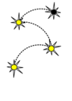

- Generated by
 1.8.12
1.8.12
|  |
StarVine
|
Python wrappers to MVTDST subroutine are generated by f2py.
MVTDST computes an integral of a multivariate Student-T distribution, thus producing a numerical estimate for a multivariate Student-T CDF.
All credit for the integrator goes to Alan Genz. See the license file for details. BSD-3clause compatible.
To manually build the python extension module:
f2py -c mvtdstpack_custom.pyf mvtdstpack.f
Depends:
- numpy (includes f2py) - a functional fortran compiler
In python, import the mvtdstpack module:
import mvtdstpack as mvt
Use the mvtdst routine to integrate a 2D Student-T distribution:
# 2d student t settings dim, dof = 2, 10 # corr coeff parameter rho = np.array([0.7]) # # integration settings (int from -inf, to upperb) lowerb = np.array([0.0, 0.0], dtype='double') upperb = np.array([0.2, 0.2], dtype='double') inFin = np.zeros(upperb.size, dtype='int') # integration limit setting delta = np.zeros(upperb.size, dtype='double') # non centrality params maxpts = int(1000 * dim) abseps = 0.001 releps = 0.0 # # Perform integration error, value, status = mvt.mvtdst(dof, lowerb, upperb, inFin, rho, delta) # # It is optional to supply dim, if not supplied dim=len(lowerb) error, value, status = mvt.mvtdst(dof, lowerb, upperb, inFin, rho, delta, n=dim) # # It is optional to suppy rel and abs error error, value, status = mvt.mvtdst(dof, lowerb, upperb, inFin, rho, delta, maxpts, abseps, releps)
Note: mvtdst only accepts integers for degrees of freedom parameter.
1.8.12